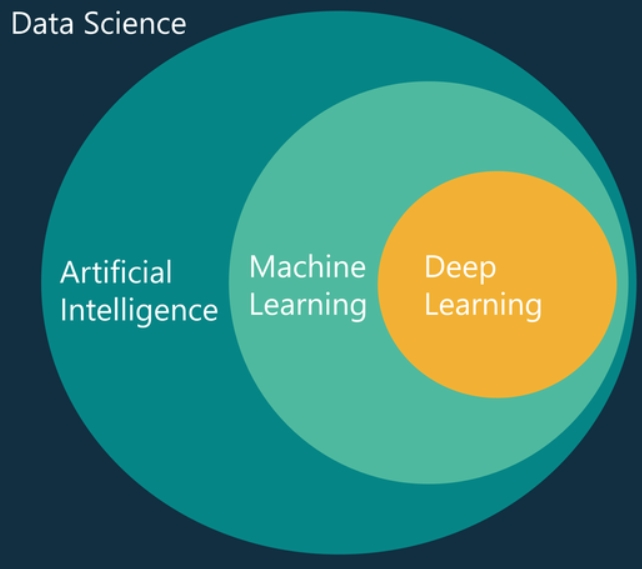

¿Qué es el Aprendizaje Autmático?
El aprendizaje automático es un tipo de inteligencia artificial (AI) que proporciona a las computadoras la capacidad de aprender, sin ser programadas explícitamente. El aprendizaje automático se centra en desarrollar sistemas que aprenden, o mejoran el rendimiento, en función de los datos que consumen.
Los algoritmos son los motores que impulsan el aprendizaje autónomo. En general, actualmente se utilizan dos tipos principales de algoritmos de aprendizaje autónomo: aprendizaje supervisado y aprendizaje no supervisado. La diferencia entre ellos se define por cómo cada uno aprende acerca de los datos para hacer predicciones.Elección de un enfoque
¿Cuál es el mejor enfoque para sus necesidades?
La elección de un algoritmo de aprendizaje automático supervisado o no supervisado generalmente depende de factores relacionados con la estructura y el volumen de sus datos, y del caso de uso al  que desea aplicarlo. El aprendizaje autónomo ha florecido en una amplia gama de industrias, ofreciendo asistencia en una variedad de objetivos comerciales y casos de uso que incluyen:
que desea aplicarlo. El aprendizaje autónomo ha florecido en una amplia gama de industrias, ofreciendo asistencia en una variedad de objetivos comerciales y casos de uso que incluyen:
✔Valor de vida del cliente
✔Detección de anomalías
✔Fijación de precios dinámica
✔Mantenimiento predictivo
✔Clasificación de imágenes
✔Motores de recomendación
Similitud
El proceso de aprendizaje automático es similar al de la minería de datos. Ambos sistemas buscan entre los datos para encontrar patrones. Sin embargo, en lugar de extraer los datos para la comprensión humana –como es el caso de las aplicaciones de minería de datos– el aprendizaje automático utiliza esos datos para detectar patrones en los datos y ajustar las acciones del programa en consecuencia.

Los algoritmos del aprendizaje automático se clasifican a menudo como supervisados o no supervisados. Los algoritmos supervisados pueden aplicar lo que se ha aprendido en el pasado a nuevos datos. Los algoritmos no supervisados pueden extraer inferencias de conjuntos de datos.
Ejemplo
El feed de noticias de Facebook utiliza el aprendizaje automático para personalizar el feed de cada miembro. Si un miembro detiene frecuentemente su desplazamiento para leer o "gustar" de las publicaciones de un amigo en particular, el feed de noticias empezará a mostrar más actividad de ese amigo antes en el feed.
Detrás del telón, el software simplemente utiliza análisis estadístico y análisis predictivo para identificar patrones en los datos del usuario, y utilizar patrones para rellenar el feed de noticias. En caso de que el miembro ya no detenga para leer, gustar o comentar sobre los mensajes del amigo, esos nuevos datos se incluirán en el conjunto de datos y el feed de noticias se ajustará en consecuencia.
El poder de la predicción
En el pasado, las decisiones empresariales a menudo se tomaban en base a los resultados históricos. Hoy en día, el aprendizaje autónomo emplea una analítica contundente para predecir lo que sucederá. Las organizaciones pueden tomar decisiones proactivas con anticipación en lugar de confiar en datos pasados.
Los beneficios del mantenimiento predictivo se extienden al control y la gestión del inventario. Al evitar el tiempo de inactividad no planificado mediante la implementación del mantenimiento predictivo, las organizaciones pueden predecir con mayor precisión la necesidad de repuestos y reparaciones, lo que reduce significativamente los gastos de capital y operativos.
Referencia 02